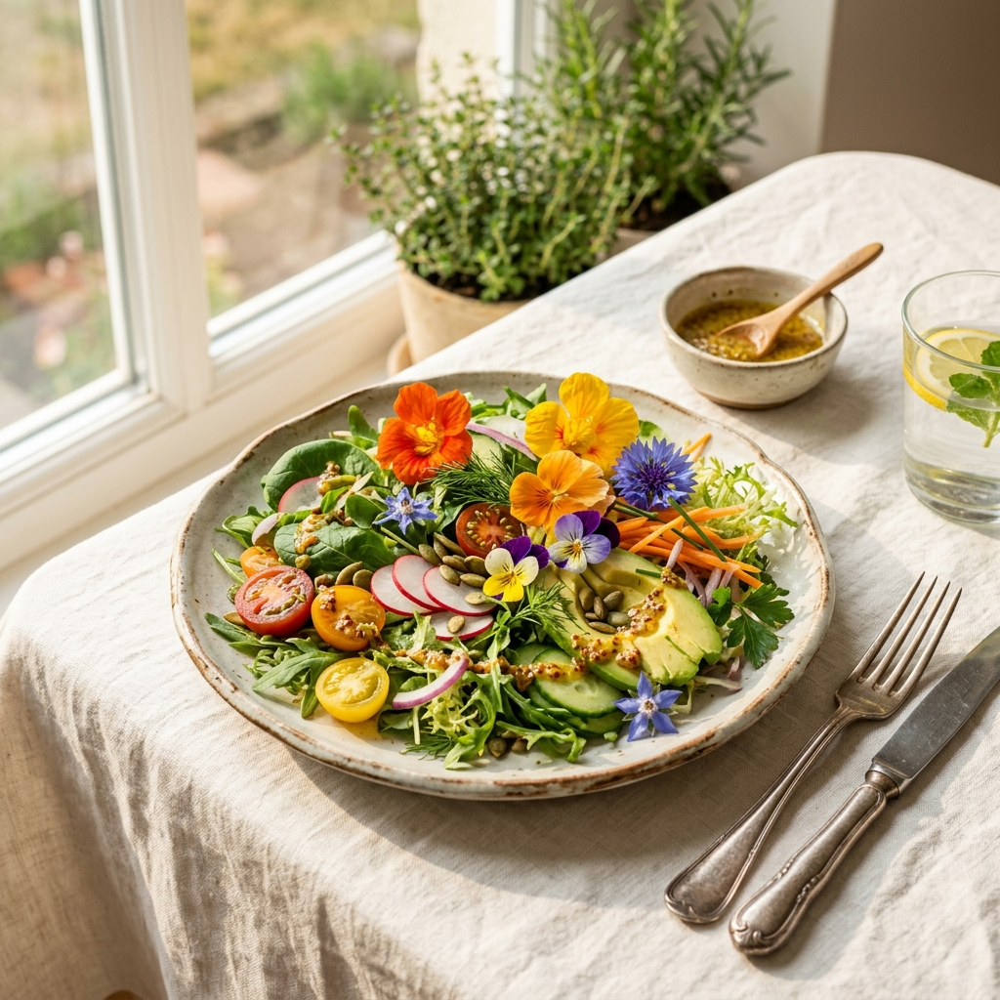
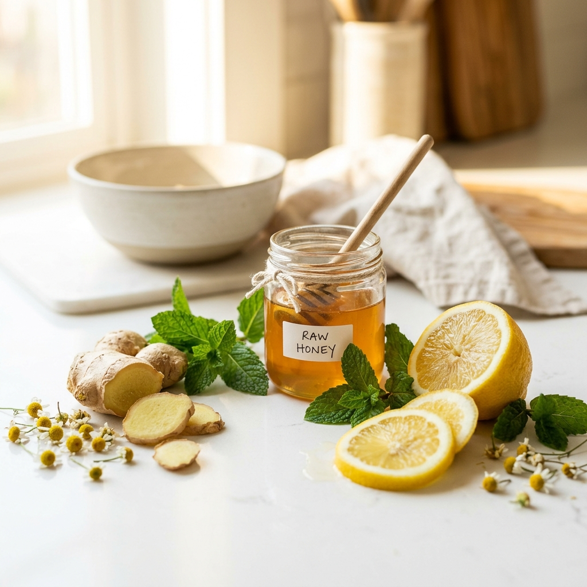
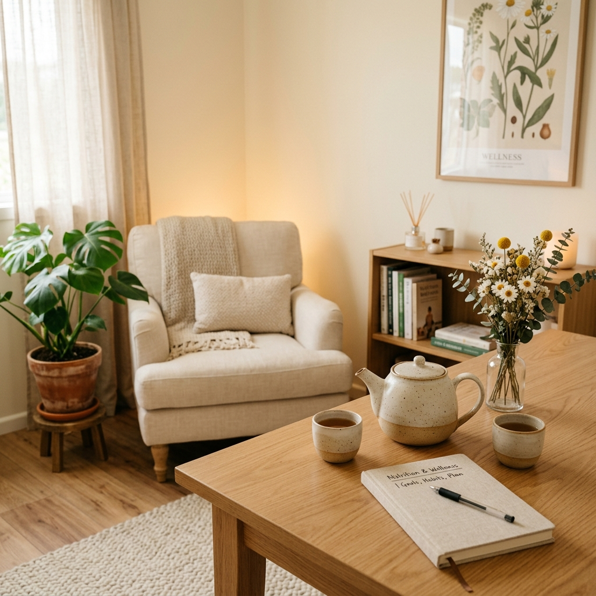
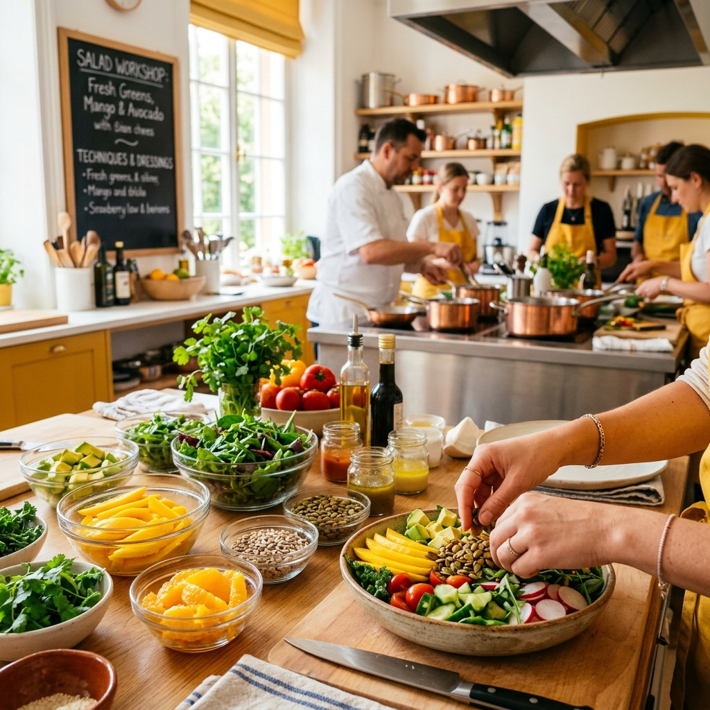

자연의 온기로
몸과 마음을 채우는
Healing Table
힐링푸드연구소는 자연 본연의 정직한 식재료와 균형 잡힌 영양학을 통해 현대인들의 지친 몸과 마음을 치유하는 식생활 솔루션을 연구합니다.

자연에서 찾은 비움과 채움의 미학

Research
"당신이 먹는 것이 곧 당신입니다"
우리는 바쁜 일상 속에서 인스턴트식품과 가공식품에 익숙해져 몸의 경고를 무시하곤 합니다. 힐링푸드연구소는 단순히 맛있는 요리를 만드는 것을 넘어, 개개인의 체질과 건강 패턴에 최적화된 '약이 되는 음식(藥膳)'을 연구하고 대중화하고 있습니다.
불필요한 첨가물은 비우고, 대자연이 선물한 고유의 영양소와 생명력을 채우는 올바른 식생활 문화를 만들어 갑니다.
-
신인합일 (身人合一)
몸과 정신은 하나이며, 음식은 이 둘의 완전한 조화를 이루는 매개체입니다.
-
자연주의 순환 식탁
제철 식재료의 생명력을 온전히 살려 지구와 몸에 무해한 조리를 고집합니다.
-
무첨가 원칙
정제당, 화학 조미료, 인공 색소를 배제하고 자연 발효와 대체 감미료를 사용합니다.
-
개인화 맞춤 영양
성별, 연령, 유전자 정보 및 현대인의 만성 건강 상태에 최적화된 맞춤형 솔루션 제공.
건강한 삶을 설계하는 연구소의 활동
일상 속에서 푸드 테라피를 손쉽게 경험할 수 있도록 맞춤형 프로그램과 최적의 요리 공식을 제안합니다.

일대일 맞춤 식생활 테라피
개인의 대사 속도, 식습관, 혈액 건강 데이터를 심층 분석하여 만성 염증 완화 및 체력 증진을 위한 1:1 맞춤형 식단 가이드라인을 제공합니다.
상담 예약하기
프라이빗 힐링 쿠킹 클래스
자연 재료 본연의 맛을 손상 없이 극대화하는 약선 조리 기법과, 저염·저당식으로 맛과 품격을 모두 지켜내는 감각적인 요리를 직접 만들어보는 클래스입니다.
클래스 문의식품 및 메뉴 개발 (R&D)
유통업체, F&B 브랜드, 헬스케어 플랫폼과 파트너십을 맺고 특수 영양 밀키트 레시피 설계, 비건 스낵 및 천연 저당 대체 소스 배합을 개발 및 기술 자문합니다.
기업·단체 푸드 테라피 워크숍
감정 노동자와 임직원들을 위한 '음식을 통한 스트레스 완화'와 '마음 챙김 식사법(Mindful Eating)' 워크숍을 진행하여 사내 복지와 건강 관리를 돕습니다.
건강한 내일을 위한 의미 있는 발걸음
H푸드 만성 염증 완화 30일 밀키트 식단 설계
중장년층의 미세 염증 수치를 낮추기 위해 항산화 지수가 높은 30종의 제철 요리 레시피를 영양학적 설계와 함께 공동 개발하여 런칭했습니다.
베스트셀러 『자연 한 그릇, 위로 한 스푼』 출간
바쁜 일상에 지쳐 위장 장애와 번아웃을 겪는 현대인들을 위한 자가 치유 푸드 에세이 및 레시피 북을 출간하여 건강 분야 베스트셀러 4주 연속 1위를 기록했습니다.
양평군 친환경 유기농 농가 로컬 메뉴 개발 컨설팅
지역 특산물(친환경 버섯, 산나물 등)을 활용한 시그니처 힐링 한정식 메뉴 개발을 수행하여, 로컬 푸드 매장의 매출 향상과 농가 활성화에 기여했습니다.
대한통합의학회 '식품 치유 사례의 실제' 우수 논문 발표
연구소 회원 150명의 식단 개선 전후 자율신경계 균형도 및 수면 효율 측정 데이터를 통합 분석하여 학술 대회에서 푸드 테라피의 임상적 유의성을 검증받았습니다.
힐링푸드연구소와 함께한 파트너사
오늘부터 시작하는
건강한 나를 위한 변화
몸의 신호에 귀 기울이고 싶다면, 지금 힐링푸드연구소에 문의하세요. 따뜻한 차 한 잔과 함께 편안한 마음으로 기다리고 있겠습니다.
위치
서울특별시 강남구 테헤란로 427, 웰니스 타워 12층
연락처
02-555-8274 | healingfoodlab@naver.com
운영 시간
평일 10:00 - 18:00 (점심시간 12:00 - 13:00 / 주말 및 공휴일 휴무)